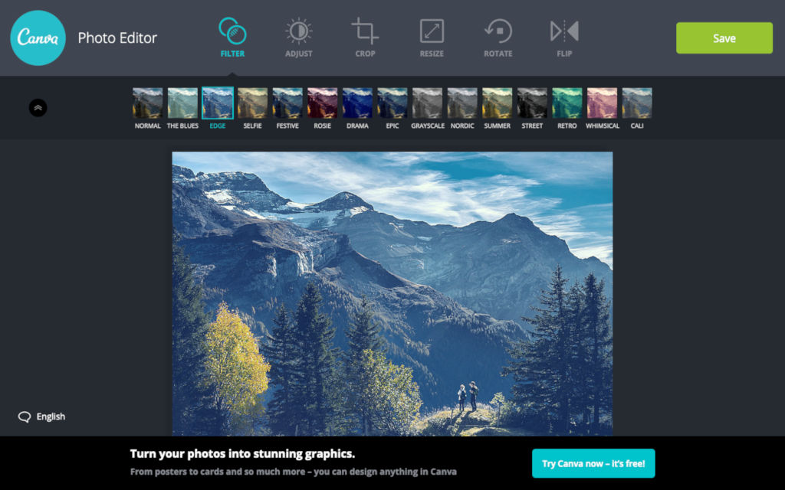
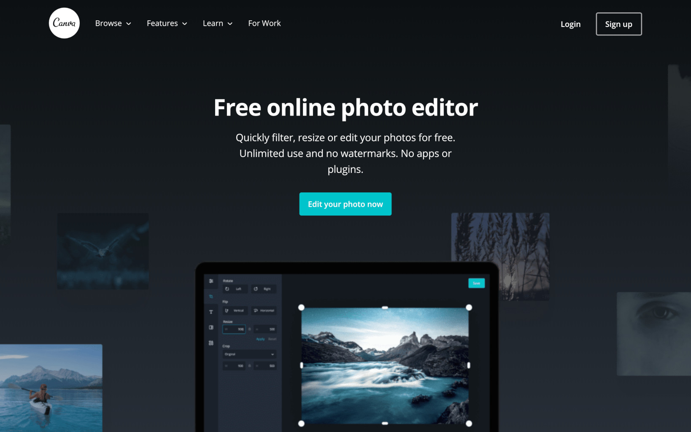
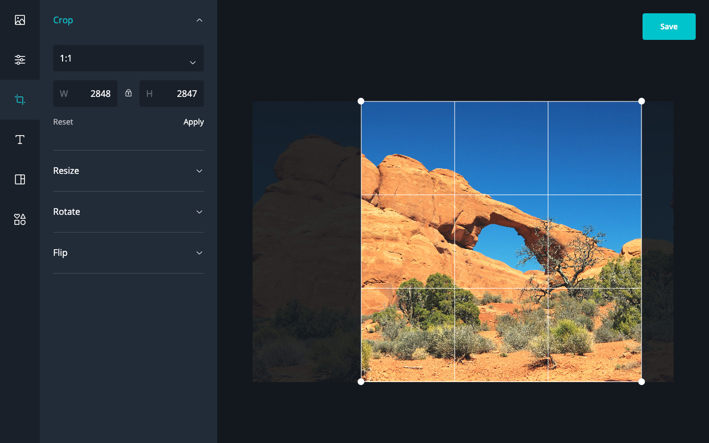

Photo Editor

Edit photos online
Photo Editor (2019) was an online tool offered by Саnvа for simple image editing. It had filters, sliders, and crop, resize, and rotation tools.
Note that it’s distinct from the Саnvа design app. This was more of a standalone tool for quick edits, with an ulterior purpose of marketing the primary Саnvа app.
Update: The standalone app has been decommissioned, and photo editing features are now part of the main app.
Project details- released
- 2019
- role
- developer
- platform
- Web
- tech
- React, canvas, WebGL, MobX

In the beginnng, the Photo Editor was a tool made by a third party developer in a proprietary UI framework on top of Angular 1 and Node 5.
This version was very old and tbh a bit difficult to maintain and iterate on. It was also not responsive so mobile users were missing out.
Old version
So a redesign was made and the app was rewritten in a more modern stack. The new version looks better, modern, and is responsive.
My part in this redesign was coding the webapp and the welcome page.
The welcome page
I wrote the new app in React with MobX.
There were a few WebGL and canvas filter algorithms from the old app that I reimplemented. Had to dip my toes into some fragment shaders for the WebGL version.

The backend is a simple server written with Express and the whole app was deployed on Heroku.
After the launch we saw doubling in signups! 🔥 It was a fun project.